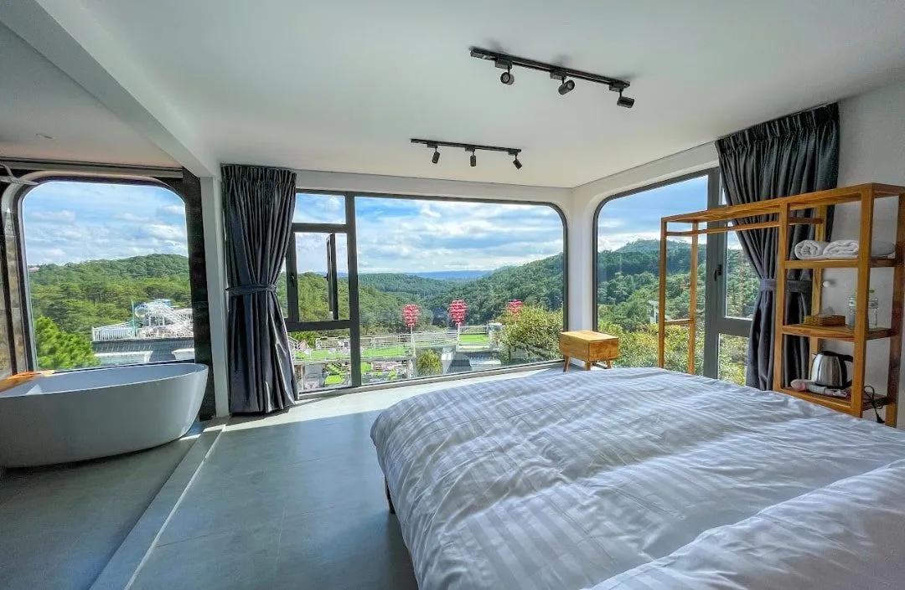
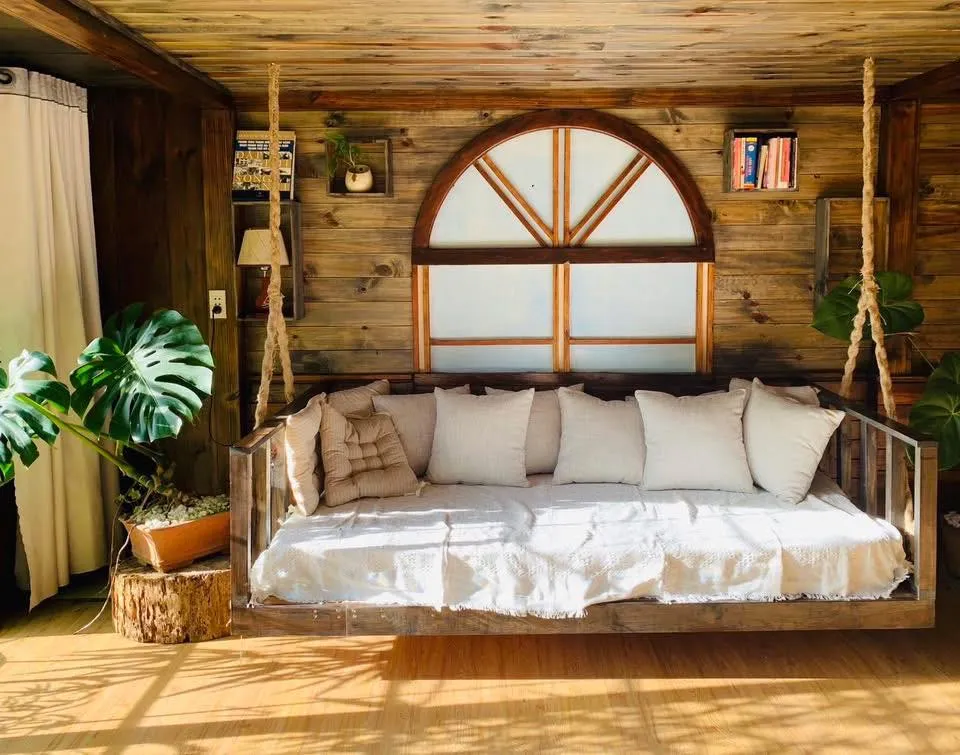
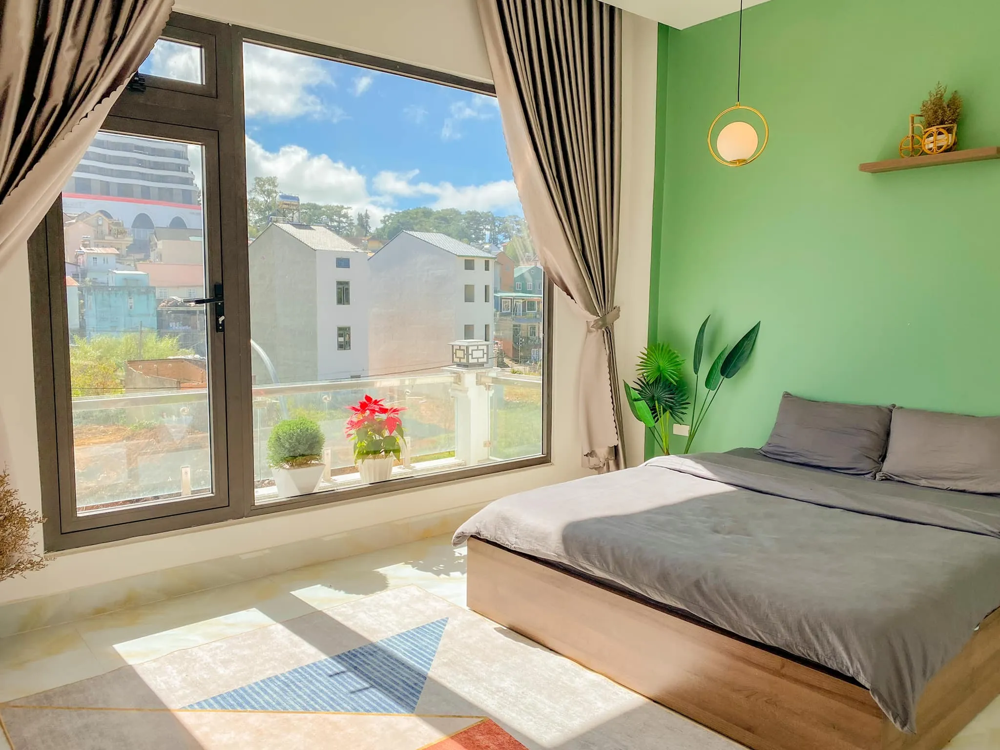
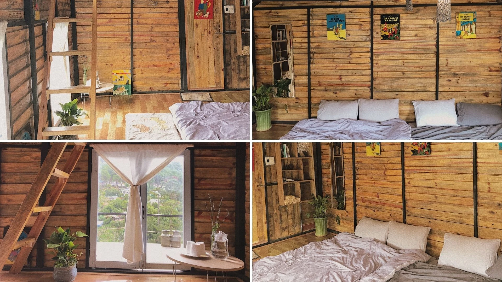
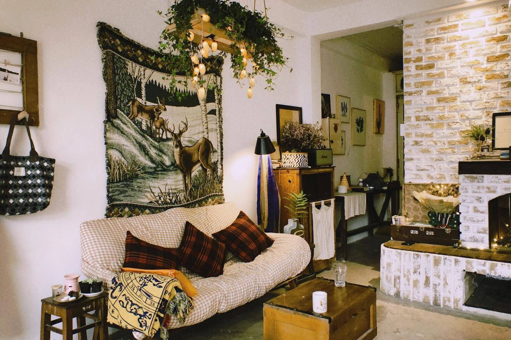

Suggested ideal homestay in Da Lat for a relaxing 3D2N trip

Table of Contents
- 1. Why should you choose Da Lat homestay for your vacation?
-
2. Top 15 homestays in Da Lat with beautiful views, affordable prices and near the center
- 2.1. Homestay G – Family – Sophisticated European features in the heart of dreamy Da Lat
- 2.2. Tilt Tilt – Homestay Da Lat has the shape of gentle things
- 2.3. Harvest Moon Inn – Moon Town: Homestay Da Lat for dreamy souls
- 2.4. Porch Corner - Homestay Da Lat is near the center with a cool and peaceful green space
- 2.5. Nap Am - Homestay Da Lat "millions of virtual living corners" in the heart of the dreamy city
- 2.6. Owl in the Tree – Homestay Da Lat is like a small nest in the middle of the green forest
- 2.7. Mot Chiec Home – Homestay Da Lat is as gentle as a bass song in the middle of a mountain town
- 2.8. Antiblue Da Lat – Homestay Da Lat is small and beautiful in the middle of quiet pine hills
- 2.9. Healing Home – Homestay Da Lat touches peace in the heart of the dreamy city
- 2.10. Summer Maison Boutique Hotel – Homestay Da Lat brings a European breath in the heart of the dreamy city
- 2.11. JOYCE Boutique Coffee & Stay – Homestay Da Lat is central with a relaxing, sophisticated space
- 2.12. Gac Ngang Doi – Homestay Da Lat, a private space in the middle of nature
- 2.13. Waiting for Someone Homestay - A stopping place for dreamy souls
- 2.14. Dear Me House – "Fairy tale house" in the heart of Da Lat
- 2.15. Jang & Min’s Homestay – Rustic Da Lat Homestay in the middle of a pine forest
- 3. Interesting activities while staying at Da Lat homestay
- 4. Experience booking homestays in Da Lat
- 5. Cuisine suggestions for 3 days 2 nights experience with Homestay Da Lat
- 6. Suggested 3 days 2 nights vacation itinerary in Da Lat and choose Homestay Da Lat
Da Lat Homestay is the ideal choice for those who want to enjoy a quiet space, close to nature and a warm feeling like their own home. Owning a unique design, convenient location near the city center and fully equipped with amenities, homestays in Da Lat will definitely bring you a memorable vacation.
If you are looking for interesting stops in this dreamy city, don't miss the attractive suggestions from Xom Leo Grill & Chill Shop. We will introduce to you top 15 homestays with beautiful views, affordable prices and located near the center, helping your trip become more complete than ever.
1. Why should you choose a homestay in Da Lat for your vacation?
1.1. Feel at home at Homestay Da Lat

Homestay provides a friendly, intimate resort space like a second home. You can cook for yourself, chat with the host, and immerse yourself in local life - something that hotels or resorts can hardly offer.
1.2. Artistic, personal design of Homestay Da Lat

From beautiful small wooden houses deep in the pine forest, to vintage houses in the city center, each homestay in Da Lat is a unique story, carefully cared for from the interior to the decoration style. Some homestays also combine cafes or art studios, helping visitors fully enjoy the beauty of the city.
1.3. Affordable prices, suitable for many target groups of Homestay Da Lat

Whether you are a student on a backpacking trip or a couple looking for a romantic place to "change things up", Da Lat always has cheap homestays that still ensure good service quality. The average room price is only from 200,000 - 600,000 VND/night, making it easy for you to plan an economical but still complete vacation.
1.4. Beautiful view of Homestay Da Lat

Most of the beautiful homestays in Da Lat are located on high hills or near pine forests, with open views overlooking the valley, lake or flower garden. Waking up in the morning in a mist and sipping a cup of coffee in the middle of nature is a "valuable" experience that many tourists love.
2.Top 15 homestays in Da Lat with beautiful views, affordable prices and near the center
Are you looking for a place to stay in Da Lat that has beautiful views, reasonable prices and is close to the center for convenient transportation and exploring the city? Then you've come to the right place! Xom Leo Grill & Chill Shop will suggest to you a list of 15 extremely ideal homestays - not only beautiful in space, fully equipped but also comfortable like home, helping you have a truly memorable vacation in the city of flowers.
2.1. Homestay G – Family – Sophisticated European features in the heart of dreamy Da Lat

G – Family is one of the homestays with the most beautiful view and impressive style in Da Lat today. Inspired by Korean design, this place is romantic, gentle and relaxing - very suitable for those who want to "heal" their souls in a cool green space.
As soon as you enter the campus, you will be attracted by the space filled with green trees and flowers. The homestay has an exquisite design, spacious, airy rooms and fully equipped with modern amenities. The garden is full of flowers and ornamental plants is the perfect highlight for those who love nature and like to slow down a bit amid the hustle and bustle of life.
Homestay G – Family contact information:
-
Address:C18 Nguyen Trung Truc, Ward 3, City. Da Lat, Lam Dong
-
Phone number:0933.598.535
-
Opening hours:07:00 – 20:00
-
Reference price:from 1,700,000 VND/night
2.2.Tilt Tilt – Homestay Da Lat has the shape of gentle things

If you are looking for a cheap, lovely and close to the center homestay in Da Lat, then Tieng Nghieng Da Lat** is definitely an option not to be missed. With a small space, rustic but poetic decor, the homestay brings a cozy and close feeling like "Da Lat quality".
Designed mainly from wood, each room here exudes warmth and gentleness, very suitable for chilly mornings, sipping coffee and enjoying peace. The homestay is located near the interprovincial bus station, extremely convenient for those traveling by bus.
The entire space is always kept clean. Bedrooms are neat, sheets are changed regularly and always smell fresh. The toilet has full hot water - a huge plus in the cold weather of Da Lat.
In particular, the homestay also owns many romantic, gentle virtual living corners - ideal for those who like to check-in. The friendly and supportive staff is also what makes visitors feel satisfied when choosing this place as a stopover.
Contact information Tilting Tilt Da Lat:
-
Address:Alley 14, Street 3/4, Ward 3, City. Da Lat, Lam Dong
-
Phone number:0878 874 307
-
Opening hours:Open 24/7
-
Reference price:*Updating*
2.3. Harvest Moon Inn – Moon Town: Homestay Da Lat for dreamy souls

Harvest Moon Inn– also affectionately known as “Moon Townâ€, is one of the homestays in Da Lat with super poetic valley view and extremely attractive chill space. With a gentle design, close to nature, this place gives you a feeling of peace, true to dreamy Da Lat.
Right from the entrance, you will be impressed with the typical small slope of the land of fog, creating a romantic scene like in the movies. The room is spacious, clean, meticulously cared for, and the price is extremely "affordable" - only from 400,000 VND/night.
Another big plus is that the homestay owner is extremely cute and hospitable, always ready to assist you at any time. The space around the homestay is cool and airy, with a view of the long green valley, helping you have moments of complete relaxation.
In addition, the homestay also has many gentle, delicate virtual living corners, suitable for those who love taking photos or simply want to preserve peaceful moments in Da Lat.
Contact information for Harvest Moon Inn – Moon Town:
-
Address:Group 20, An Son Street, Ward 4, City. Da Lat, Lam Dong 66115
-
Phone number:0777 368 863
-
Reference price:400,000 VND/night
-
Opening hours:Always open
2.4. Porch Corner - Homestay Da Lat is near the center with a cool and peaceful green space

If you are looking for a lovely homestay, close to the center and imbued with the poetic features of Da Lat, then Corner Porch is the ideal choice. Located only about 300m from Xuan Huong Lake, from here you can easily walk to famous places such as Da Lat market, Con Ga church, Teaching Collegeor Lam Vien square.
The space at Porch Corner is cared for in every detail with gentle, delicate and colorful decor, each room has its own style, creating diversity and personality. Homestay owns many excellent virtual living corners, which will definitely satisfy even photography enthusiasts.
Surrounding the homestay is the cool green color of old pine trees, creating a feeling of closeness to nature, quiet and relaxation. Besides, Corner Porch also has a spacious, clean kitchen, very suitable for those who like to cook and enjoy warm meals with friends and relatives.
Contact information for Porch Corner:
-
Address:Planning Area, Pham Hong Thai Street, Ward 10, City. Da Lat, Lam Dong
-
Room price:From 350,000 - 400,000 VND/night (Weekends may increase slightly by about 50,000 VND)
-
Phone number:058 300 7777
-
Opening hours:Always open
2.5. Nap Am - Homestay Da Lat "millions of virtual living corners" in the heart of the dreamy city

True to its name, Homestay Nam Am brings a cozy, close feeling - like a place for you to "hide" in after busy days. This is one of the homestays in Da Lat that has beautiful views, unique design and possesses countless virtual living photography angles that will make you fascinated from morning to night.
Rooms at Nap Am are neatly and cleanly arranged, the decor space is both modern and close to nature. The hosts are an extremely funny, friendly couple, always ready to assist to make your vacation more complete.
A big plus here is the spacious BBQ area, ideal for gatherings of friends or family or company trips. In addition, the homestay is also equipped with a projector to watch movies outdoors - a "cool" experience amidst the chilly air of Da Lat.
Contact information for Homestay Nam Am:
-
Address:C15 To Vinh Dien, Ward 6, City. Da Lat, Lam Dong
-
Phone number:0768 903 979
-
Opening hours:Always open
-
Reference price:From 450,000 - 1,000,000 VND/night
2.6. Owl in the Tree – Homestay Da Lat is like a small nest in the middle of the green forest

If you are looking for a new, close to nature accommodation experience, Owl on the Tree Homestay is the ideal stop. Located peacefully on Dang Thai Than slope - where the city and nature meet - the homestay is designed with inspiration from an owl's nest, bringing a feeling of both wildness and uniqueness.
Stepping into the space of Owl in the Tree, you will feel the warmth, quietness and gentleness from the very first moments. Each room here has a private balcony - where you can freely watch the Da Lat valley covered in morning mist or immerse yourself in the gentle sunset.
A special feature is that the rooms are lovingly named "Owl's Nest", "Sparrow's Nest", "Dai's Nest"..., as an invitation to visitors to return to their instinct of being close to nature. Natural pine wood furniture, combined with soft lighting and elegant colors, makes this place more cozy and poetic than ever.
Contact information for Owl in the Tree Homestay:
-
Address:No. 37, Dang Thai Than, Ward 3, Da Lat
-
Reference price:From 450,000 VND/night
-
Opening hours:Always open
2.7. Mot Chiec Home – Homestay Da Lat is as gentle as a bass song in the middle of a mountain town

One Chi Home is the ideal destination for those who love peace, nostalgia and romance. With a gentle vintage style, this homestay has large glass windows that open up to the lush green pine forest, helping you fully enjoy the poetic beauty of the city of flowers.
Although located right in the center of Da Lat city, this place is extremely quiet, very suitable for you to rest, read books, sip coffee and slow down in the hustle and bustle of life.
Rooms at Mot Chiec Home are neatly decorated, sophisticated and clean, with full modern amenities. Besides, the homestay also thoughtfully gives guests free cakes and coffee - a small but very heartwarming plus point. The host and staff are extremely friendly, cute, always ready to assist with all guests' needs.
One Chiec Home contact information:
-
Address:81 Co Loa Street, Ward 2, Da Lat, Lam Dong
-
Phone number:0906 136 310
-
Reference price:350,000 - 550,000 VND/night
-
Opening hours:Always open
2.8. Antiblue Da Lat – Beautiful small Da Lat Homestay in the middle of quiet pine hills

If you are looking for a Da Lat homestay with beautiful views, reasonable prices and peaceful space, then Antiblue Da Lat is definitely a name not to be missed. Located on a small hill, the homestay brings a feeling of privacy and quiet, very suitable for those who want to "escape the city" and enjoy a bit of the chill of the foggy city.
The design at Antiblue is quite lovely and cozy, the rooms are carefully cared for, clean and airy. From the balcony, you can freely admire the poetic nature, in the distance are rows of pine trees and small roofs hidden in the mist - a very "Da Lat" scene.
The host and housekeeper are friendly and enthusiastic, always ready to assist with all guests' needs. The homestay is also located near lovely cafes and famous attractions, making it easy for you to explore Da Lat without spending much time traveling.
Antiblue Da Lat contact information:
-
Address:66 Cao Thang Street, Ward 7, Da Lat, Lam Dong
-
Phone number:0974 306 027
-
Reference price:350,000 - 550,000 VND/night
-
Opening hours:Always open
2.9. Healing Home – Homestay Da Lat touches peace in the heart of the dreamy city

If you are looking for a quiet space to rest and "heal", Healing Home is the ideal choice. Homestay is located on a small, peaceful street of Da Lat, possessing beautiful view, spacious and airy space, very suitable for those who need some quietness in nature.
Healing Home is designed in a minimalist yet sophisticated style, with 4 large bedrooms and 1 small room, suitable for groups of friends or families. Every detail in the house is personally arranged by the owner, creating a warm, intimate and artistic space.
In any corner at Healing Home, you can easily get beautiful photos - from the abundant natural light, the airy balcony corner, to the small yard full of trees. This is the place for you to stop, take a deep breath and let your mind rest after long tiring days.
Healing Home contact information:
-
Address:25/7 D. Tran Anh Tong, Ward 8, Da Lat, Lam Dong
-
Phone number:0964 876 386
-
Reference price:350,000 - 550,000 VND/night
-
Opening hours:Always open
2.10. Summer Maison Boutique Hotel – Homestay Da Lat brings a European breath in the heart of the dreamy city

If you are looking for an accommodation space with a modern European style but still close and cozy, then Hè Maison Boutique Hotel is the ideal stop. Nestled on the edge of the city, the homestay possesses views overlooking gardens and romantic valleys, bringing a feeling of absolute relaxation and freedom.
The interior space is designed harmoniously, spacious and sophisticated, with a Western feel with gentle color tones and warm wooden furniture. The bedroom has large glass doors facing the pine hills, a balcony that welcomes the morning sun and fresh air - an ideal place for you to start your day gently.
****

In addition, fragrant bedding, soft mattress, and the dedication of the friendly staff are big pluses. In particular, you also get free breakfast with buffet dishes prepared in the homestay's kitchen - small but heartwarming like your own home.
Contact information for Summer Maison Boutique Hotel:
-
Address:Thanh Tuyen Specialty Alley, near Chinese Pagoda - 50 Khe Sanh, Ward 10, Da Lat, Lam Dong
-
Phone number:0977 416 604
-
Reference price:1,150,000 VND/night
-
Opening hours:Always open
2.11. JOYCE Boutique Coffee & Stay – Central Da Lat Homestay with a relaxing, sophisticated space

JOYCE Boutique Coffee & Stayis a homestay in Da Lat that stands out thanks to its prime location right in the city center, just a few steps away you can explore the night market, walk around Xuan Huong Lake or visit famous restaurants. This is the ideal choice for those who want to fully enjoy the mountain town atmosphere while still conveniently moving.
The homestay is designed with a modern, gentle style. Rooms are clean, neat and fully equipped, making you feel comfortable like at home. The special point that makes JOYCE's mark is the lovely cafe on the ground floor - where you can sip a cup of coffee, check-in with cute, Da Lat-style decor corners.
If you are looking for a place that is comfortable, cozy, and reasonably priced right in the center, then JOYCE Boutique Coffee & Stay is a worthy stop.
JOYCE Boutique Coffee & Stay contact information:
-
Address:F16 KQH Hoang Dieu, Ward 5, Da Lat, Lam Dong
-
Phone number:0948 537 668
-
Reference price:Updating
-
Cafe opening hours:6:30 - 16:30
2.12. Gac Ngang Doi – Homestay Da Lat, private space in the middle of nature

If you are looking for a place to get away from the hustle and bustle, then Gac Ngac Hill is an ideal choice. Nestled on the hillside, the homestay has a view overlooking fields and vast pine forests, bringing a feeling of quiet, privacy and extreme relaxation.
The space at Gac Ngang Doi is spacious and airy, every small corner of the campus can become a beautiful virtual living background. Rooms are minimalist in design but fully equipped, ensuring comfort for a long stay.
The homestay's location is also very convenient - near the center but still separate, close to many delicious restaurants and famous attractions. With a reasonable price compared to the quality of service, Gac Ngang Doi deserves to be a memorable stop when you come to the city of flowers.
Contact information for Gac Ngang Doi:
-
Address:Dang Thai Than Street, Ward 3, Da Lat, Lam Dong
-
Phone number:0914 486 440
-
Reference price:Updating
-
Opening hours:Updating
2.13. Waiting for Someone Homestay – A stopping place for dreamy souls

Waiting for Someone Homestay is the ideal destination for those who love the quiet, poetic and unique space of Da Lat. With only 3 beautiful small rooms, the homestay brings a private, cozy feeling - suitable for individuals, couples or small groups of friends (from 1 to 7 people).
The highlight here is the glass window view overlooking the valley and pine hills, helping you easily immerse yourself in the clear, green nature. The interior space is simply and delicately decorated, creating a gentle, relaxing feeling. Each room is fully equipped with basic amenities, ensuring comfort for your stay.
“Waiting for Someone†is not just a name, but also a feeling you will feel - gentle, profound and enough to make you want to slow down in the hustle and bustle of life. This is a great place for you to "temporarily escape" from the city and listen to yourself.
Contact information for Waiting for Someone Homestay:
-
Address:Group 65, Prenn Pass Road, Ward 3, City. Da Lat, Lam Dong
-
Phone number:0868 708 025
-
Opening hours:Always open
-
Reference room price:From 450,000 VND/night
2.14.****Dear Me House – "Fairytale house" in the heart of Da Lat

Nestled in a quiet small alley on Tran Phu Street, Dear Me House gives visitors the feeling of being lost in a fairy house amidst a lush green garden and colorful flowers. This is definitely the ideal choice for those who want to find a truly peaceful and poetic place to stay in Da Lat.
The space at Dear Me House is designed in a luxurious and sophisticated European style, every corner exudes gentle and romantic beauty. All rooms receive full natural light – from brilliant sunrises to gentle sunsets, helping you enjoy every moment of the day to the fullest.
Relaxing here, you will be immersed in nature, smell the scent of flowers, enjoy melodious music, and feel true relaxation in a poetic space. A gentle experience but enough to make you remember the "dream city" forever.
Dear Me House contact information:
-
Address:Alley 23, Tran Phu, Da Lat
-
Reference price:From 950,000 VND/night
-
Opening hours:Always open
2.15. Jang & Min’s Homestay – Rustic Da Lat Homestay in the middle of a pine forest
Jang & Min’s Homestay is not only a place to stay, but also a space for you to find peace of mind. Nestled in the middle of a pine forest, the homestay impresses with its unique combination of traditional wood materials and a minimalist Japanese style.
The entire space is built from natural pine wood panels, from the floor, ceiling to furniture, creating a rustic, close yet cozy feeling. Every little corner in the homestay brings gentleness and peace - especially when you sit next to the clear glass window, admiring the blue pine forest covered in mist.
Jang & Min's gives visitors a feeling of slow living, true to Da Lat. With a reasonable price and location near the center, this is the ideal choice for those who love warm wooden spaces, like nostalgia, and want to immerse themselves in nature without going too far from the city.
Contact information for Jang & Min’s Homestay:
-
Address:16/1 Khoi Nghia Bac Son, Ward 10, City. Da Lat, Lam Dong
-
Phone number:0902 504 382
-
Reference room price:From 150,000 - 500,000 VND/night
-
Opening hours:Always open
3. Interesting activities while staying at Da Lat homestay
Not just a place to stop, Da Lat homestays also offer many wonderful experiences to help make your vacation more complete:
-
Relax in nature:Most homestays have green gardens, ideal for you to read books, sip coffee, or simply sit still and watch the clouds drift through the pine trees.
-
Gathering around a cup of hot tea:In the gentle cold of Da Lat, there's nothing better than sitting down with friends over a warm cup of tea, sharing everyday stories in a quiet and cozy space.
-
Explore nearby tourist attractions: Many homestays are located near famous locations such as Tuyen Lam Lake, Love Valley, city flower gardens,... helping you save travel time while still comfortably exploring.
4. Experience booking a homestay in Da Lat
To have a smooth and memorable vacation in Da Lat, don't miss the tips below:
-
Book early during peak season: During holidays, Tet or weekends, Da Lat is often very crowded. Please proactively book 1-2 months in advance to reserve your spot and get a good price.
-
Choose the right location:Homestays near the center are convenient for traveling and visiting famous spots such as Da Lat market, Xuan Huong Lake, etc. Meanwhile, homestays in the suburbs provide a quiet space, close to nature.
-
Read reviews and descriptions carefully: Before booking, refer to actual reviews from former guests to clearly know about room quality, amenities, and service attitude.
-
Check cancellation policy:In case of schedule changes, understanding the refund policy will help you avoid unnecessary fees.
-
Negotiation of price when staying for a long time: If you are traveling in a group or staying many nights, don't be afraid to ask for more incentives from the homestay owner - many places are very flexible and willing to give discounts to lovely guests!
5. Cuisine suggestions for 3 days 2 nights experience with Homestay Da Lat
A trip to Da Lat will be more complete if combined with cozy meals over a charcoal stove. If you are looking for a truly chill grilled restaurant in Da Lat, then * Xom Leo Grill & Chill Shop * is an option not to be missed.
🌟 Why should you try it?
Space:Rustic, cozy, vintage Da Lat style - extremely suitable for evenings of chatting.
Menu:Diverse with flavorful grilled meat, hot hot pot, fresh vegetables and many attractive snacks.
Service:Friendly service, reasonable prices - very popular with both tourists and locals.
📩Reserve a table:Here*
📌Address:113 Huynh Tan Phat, Ward 11, Da Lat
📠Directions:Google Map*
📞Hotline:076.45.27.336 – 08.99.42.84.34 – 0902.91.22.40
With a cozy space and diverse menu, Xom Leo Grill & Chill Shop is the ideal place to enjoy the evening with family and friends.
6. Suggested 3 days 2 nights vacation itinerary in Da Lat and choose Homestay Da Lat
Day 1:
- Check-in to Da Lat homestay with pine forest view (suggestion: The Wilder-nest)
- Visit Cau Dat tea hill, Tuyen Lam lake
- Dinner at Xom Leo Grill & Chill Shop, chill music and chat
Day 2:
- Get up early to hunt clouds at Hon Bo peak
- Have breakfast at Banh Can restaurant
- Visit Domaine de Marie church, City flower garden
- Afternoon stop for coffee in the forest (suggestion: Moc Tra Farm)
- BBQ dinner at the homestay or stroll the night market
Day 3:
- Relax at the homestay, take check-in photos
- Buy gifts at Da Lat market (jam, strawberries, artichokes)
- Check out and end the trip
Whether you are looking for a beautiful Da Lat homestay with pine forest view, a vintage place to chill, or a homestay near the center for easy transportation, the city of flowers always has hundreds of suitable options. And to make your trip more complete, don't miss delicious places like Tiem Xom Leo Grill & Chill - a place that preserves the warm aftertaste of Da Lat in both space and food.